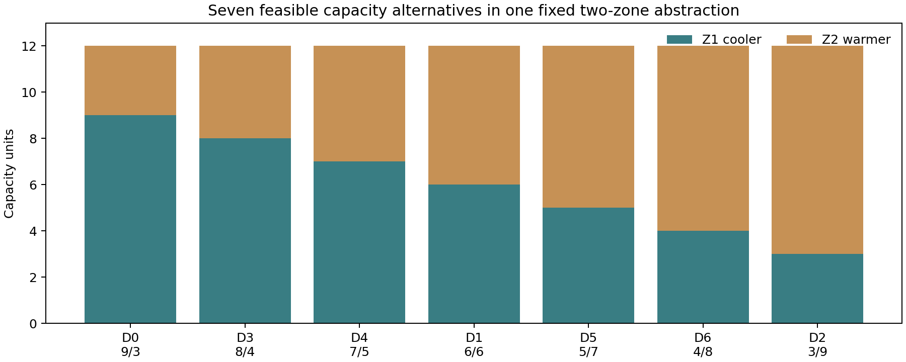
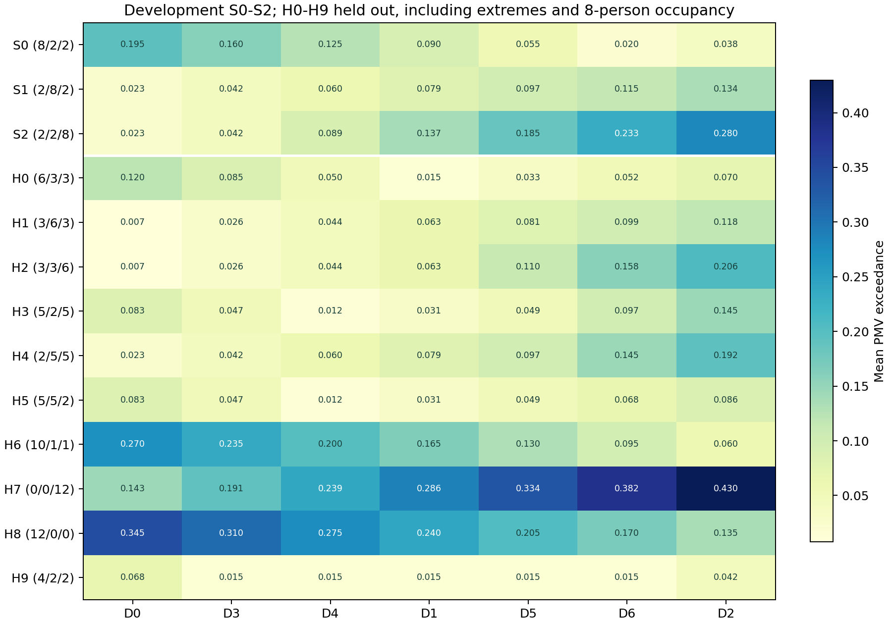
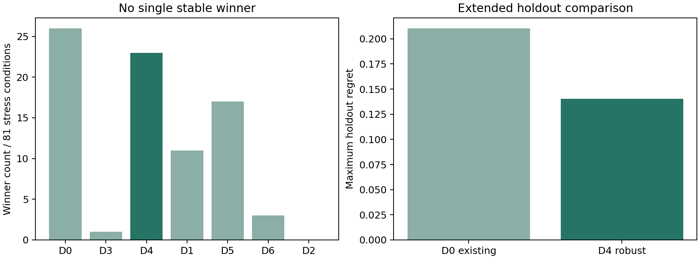

Thermal-zone capacity under changing user composition
PeopleComfort v0.2.0 · A3 submission tag: a3-submission · 18 November 2026
Four-line research summary
| Item | Finding |
|---|---|
| Decision | Should a fixed 12-place shared room retain the existing 9/3 cooler/warmer capacity split (D0), or change the split before the future user mix is known? |
| Core result | 7/5 narrowly leads 6/6. Against 9/3, its maximum magnitude-based regret falls 33.3% across ten constructed mixes, including extremes added during revision. |
| Greatest uncertainty | The thermal inputs and user mixes are hypothetical; 7/5 wins only 23 of 81 joint stress conditions, and ideal managed assignment has not been observed. |
| Design action | We recommend no change to the 9/3 reference split in this study. Only 54 of 81 stress conditions pass the comparison with 9/3. |
Research background and question
Shared interiors can contain different thermal regions while users differ in activity and clothing. A spatial design fixes how many people may use each region, whereas the eventual composition can change. Existing work studies spatial thermal preference [1], cubicle assignment under personal preferences [2], personal-comfort-model space matching [3], and seat recommendations coupled with HVAC control [4]. The narrower question here is whether a physical capacity distribution, selected before the user mix is known, remains useful across several mixes. The work compares a frozen design, not just one day's assignment.
Research question. Which two-zone capacity split minimizes the maximum regret across three development compositions, and how does that frozen split perform against the existing 9/3 split on holdout compositions, an alternate comfort metric and joint input perturbations?
The method separates zone definition, thermal calculation, feasible allocation and decision comparison. The starting inputs are a transparent hypothetical stress case. There is no surveyed floor plan, measured thermal field or observed occupant sample. The PMV and PPD numbers are calculated with a formula from the stated six-factor inputs; they are not arbitrary pre-filled suitability ratings. A site-specific recommendation would require measured or credibly simulated zone conditions, capacity and use records.
1. Prototype Scope
Decision and controlled alternatives. One schematic room has a cooler zone Z1 and warmer zone Z2, each with physical maximum capacity nine. Twelve equal capacity units are distributed between them. D0 is the stated existing reference, not historical evidence of an actual room. All seven feasible integer splits with Z1 capacity 3-9 are included. The physical intervention is capacity; the second-stage user placement is a common operating assumption.

| Design | Z1 / Z2 places | Role |
|---|---|---|
| D0 | 9 / 3 | Existing reference within the analytical case |
| D3 | 8 / 4 | Added candidate |
| D4 | 7 / 5 | Added candidate; nominal robust winner |
| D1 | 6 / 6 | Original balanced candidate |
| D5 | 5 / 7 | Added candidate |
| D6 | 4 / 8 | Added candidate; S0-only winner |
| D2 | 3 / 9 | Original warmer-zone candidate |
Inputs and evidence status. Z1 uses Ta=23.5°C, MRT=23.5°C, RH=50% and air speed=0.1 m/s. Z2 uses Ta=27.5°C, MRT=27.5°C, RH=50% and air speed=0.1 m/s. P1 is 1.0 met/0.5 clo, P2 is 1.2 met/0.5 clo, and P3 is 1.2 met/0.8 clo. These profiles describe activity and clothing, not age or demographic categories. All three profiles may use both zones, so access permissions exclude no placements in this case. The two temperatures create a contrast that can change which seats reduce burden. P1 and P2 vary activity at fixed clothing, while P2 and P3 vary insulation at fixed activity. The study uses +/-0.5 PMV as its screening band to count the magnitude of excursions on either side of neutral. The four-degree zone contrast deliberately stresses the decision. Related library research examines zone control and measured thermal conditions [8], but it does not validate these exact two values or their simultaneous occurrence in this room. Source labels in the JSON explicitly say that these inputs are hypothetical.
Scenario range. S0=8/2/2, S1=2/8/2 and S2=2/2/8 are development mixes, in P1/P2/P3 order. H0-H5 are the original six interior holdouts. H6=10/1/1, H7=0/0/12 and H8=12/0/0 probe mixes outside the development envelope. H9=4/2/2 has eight users and twelve available places, testing partial occupancy. H0-H9 serve as constructed scenario-transfer and stress checks. All ten holdouts are excluded from design selection. The three extremes are deliberately constructed tests; they are not forecasts.
Workflow route and output. The rerunnable Python package calls pinned CBE thermal code, enumerates every feasible two-zone integer allocation, evaluates all 7×13=91 design-composition cells, computes three selection rules, and perturbs four thermal/screening assumptions jointly over 81 conditions. The browser page exposes the thermal inputs and recalculates PMV with the same pinned CBE JavaScript. Output includes full JSON, CSV, thermal ledger and three explanatory figures.
Scope boundary. No plan geometry, HVAC feedback, furniture feasibility, actual seat choice, temporal adaptation, energy cost or individual thermal vote is inferred. PMV is a group-average model evaluated for declared met/clo configurations; the profile labels do not turn it into an individual prediction.
1.1 Hypothesis and rival explanations
The original three-option pilot suggested 6/6 would be robust. Expanding the candidate set provides a direct challenge to that result. The revised hypothesis is narrower: a minimax-regret split can reduce maximum holdout opportunity loss relative to the existing 9/3 split under the declared model. Its rival explanations include candidate-set geometry, a threshold effect near P1's +0.530 PMV in Z2, extreme compositions, empty capacity at eight-person occupancy, and optimistic managed assignment. The tests below expose several of these dependencies rather than claiming a universal split.
2. Workflow Artifact and reproducibility
The workflow follows the A3 brief [6]. The pinned thermal implementation is documented by CBE [5]. Repository: https://github.com/Hey-Guobaorou/peoplecomfort
The repository contains the engine, pinned CBE JavaScript and GPL-2.0 notice, both project JSON files, analysis script, independent PMV-check script, outputs and tests. The frozen submission is the Git tag a3-submission; after cloning, git rev-parse 'a3-submission^{commit}' prints its exact commit SHA. The frozen calculation commit is e097a70664d19c0fbf78a2655350e94f48dc8126. Use that revision to reproduce the original calculation and the current report source to rebuild the revised figures and PDF. Python 3.11+ and Node.js 18+ are required for the main workflow; this run used Python 3.12.12 and Node v24.11.1. The independent library is a verification dependency only.
python -m pip install -e .
python verification/smoke_check.py
python -m unittest discover -s tests -v
python coursework/analyze_extended.py
python run.py analyze --project examples/extended-a3/project.json --out rerun-extended
python -m pip install -r verification/requirements.txt
python verification/independent_pmv_check.py
python coursework/build_pdf.py
examples/extended-a3/project.json drives the seven-design analysis and 81-condition stress grid. examples/a3-thermal/project.json expresses the same nominal decision in schema v2 for the public browser editor. coursework/extended_matrix.csv, extended_results.json and the figures can be regenerated. The independent verification compares the pinned CBE engine with pythermalcomfort 4.8.1. The PDF is generated from this Markdown source. The interactive browser output is available at https://hey-guobaorou.github.io/ARCH7476/peoplecomfort.html
Isolated installation check. A wheel was built, installed into a newly created Python virtual environment, and its peoplecomfort analyze command was run from outside the source checkout against examples/a3-thermal/project.json. It produced 91 rows and selected D4; the installed package contained the CBE source and browser assets. The temporary virtual environment is not part of the submission.
| Artifact | Reproducibility role |
|---|---|
src/peoplecomfort/, run.py, pyproject.toml |
Validated engine, browser, CLI, pinned CBE implementation |
examples/extended-a3/project.json |
All seven candidates, thirteen compositions, four stress dimensions and action-rule status |
examples/a3-thermal/project.json |
Equivalent nominal inputs in the general schema used by the browser |
coursework/analyze_extended.py, extended_results.json, extended_matrix.csv |
Rebuild and inspect the revised comparisons |
verification/smoke_check.py, test_log.txt, AI_LOG.md |
One-line reproducibility check and audit records |
verification/independent_pmv_check.py, independent_pmv_comparison.json |
Reproduce six-case cross-implementation PMV/PPD check |
results/a3-submission/ |
Committed CLI export from the frozen A3 input |
tests/ |
Capacity, assignment, split, partial occupancy and PMV integration tests |
3. Workflow Description
| Input | Operation | Output | Quality check | Design interpretation |
|---|---|---|---|---|
| Zone conditions, met/clo profiles and source statements | Validate six-factor bounds and calculate CBE PMV/PPD | Six profile-zone thermal records | Compare six nominal cases with independent pythermalcomfort; inspect input provenance | Identify modelled thermal opportunities, conditional on input quality |
| Seven splits and 13 explicit mixes | Enumerate full feasible integer assignments; minimize mean PMV exceedance | 91 losses, assignments and group burdens | Conserve occupied people, enforce capacities/access, reject infeasible rows | Compare available capacity under identical thermal fields |
| S0-S2 development rows | Minimize baseline loss, worst loss and maximum regret | Frozen candidate selections | Keep H0-H9 outside selection; preserve ties | Choose a physical split under uncertain composition |
| H0-H9 | Compute regret for frozen designs; repeat using mean PPD | Holdout and alternate-metric checks | Show outside-envelope and eight-person rows separately | Test transfer and threshold dependence |
| 81 joint input conditions | Recalculate PMV, allocation and selection | Winner counts and D0/D4 comparison | Treat counts as grid coverage, not probabilities | Decide whether a nominal recommendation survives perturbation |
4. Generative Loop and method rationale
Regret measures how much additional loss a design incurs for a given user mix. Subtract the lowest loss among the seven candidates for that same mix from the chosen design's loss. In S0, D0 has loss 0.1953 and D6 has the lowest loss, 0.0199. The regret for D0 is therefore 0.1953 - 0.0199 = 0.1754. Minimax regret selects the design whose largest regret across the development mixes is smallest.
| Loop step | Declared implementation |
|---|---|
| 1. Input condition | One two-zone abstraction; twelve available places; CBE PMV inputs and access constraints |
| 2. Variable / range | Z1 capacity 3-9, with Z2=12-Z1; 3 development mixes; 10 holdouts, one at 8/12 occupancy |
| 3. Variants | D0, D3, D4, D1, D5, D6 and D2, covering all seven feasible splits |
| 4. Evaluation metric | Mean exceedance max(0, abs(PMV) - 0.5) per occupied person; report mean PPD in parallel |
| 5. Output | Full 91-cell matrix, allocations, PMV/PPD ledger, regrets and 81-condition stress record |
| 6. Comparison rule | S0-only minimum versus maximum development regret; compare selected design with D0 on frozen holdouts and stress grid |
| 7. Design action | Apply the explicit exploratory gate below; if it fails, keep the 9/3 reference split pending field evidence |
For type i in zone z, e(i,z)=max(0,abs(PMV(i,z))-0.5). The design/scenario loss is sum assigned_count(i,z)*e(i,z) / occupied_people. Thus H9 is divided by eight, not twelve. Regret in scenario s is the design's loss minus the lowest feasible candidate loss in s. The algorithm enumerates all integer allocations to two zones, with capacity, full assignment and allowed-zone constraints. Equal first-stage capacity controls resource count; empty seats are permitted at partial occupancy. The model assumes a manager can implement the allocation. It does not predict voluntary movement.
Decision threshold status. No auditable record proves that the pilot's 20% threshold was frozen before its first holdout calculation. It must therefore be treated as post hoc. The revised action gate is also exploratory: require at least 20% lower maximum regret over H0-H9 than D0; then require D4's maximum regret over H0-H9 in at least 75% of the 81 perturbed worlds to exceed D0's corresponding maximum regret by no more than 0.01. In each world, regret uses that world's seven-design scenario minimum. The thresholds were chosen during revision and are not preregistered. A field study must date and freeze its gate before collecting or inspecting holdout outcomes.
5. Prototype Output and design interpretation
The expanded candidate set changes the recommendation. S0-only selection is D6 (4/8); minimizing the worst development loss also selects D4 (worst loss 0.1251). Minimizing maximum development regret selects D4 (7/5, regret 0.1052). The old 6/6 result was contingent on restricting the candidates to D0-D2. The full matrix includes three development, six interior holdout, three outside-envelope holdout and one eight-person holdout compositions.

Regret by user mix and design. Each row uses the same mix as Figure 2. Zero identifies a lowest-loss design. To check the selection, take the largest value in S0-S2 for each design column, then compare those seven maxima. H0-H9 evaluate the frozen choices. Values are calculated before rounding.
| Mix | D0 | D3 | D4 | D1 | D5 | D6 | D2 |
|---|---|---|---|---|---|---|---|
| S0 | 0.1754 | 0.1403 | 0.1052 | 0.0702 | 0.0351 | 0.0000 | 0.0184 |
| S1 | 0.0000 | 0.0184 | 0.0368 | 0.0552 | 0.0736 | 0.0920 | 0.1104 |
| S2 | 0.0000 | 0.0184 | 0.0661 | 0.1139 | 0.1616 | 0.2094 | 0.2571 |
| H0 | 0.1052 | 0.0702 | 0.0351 | 0.0000 | 0.0184 | 0.0368 | 0.0552 |
| H1 | 0.0000 | 0.0184 | 0.0368 | 0.0552 | 0.0736 | 0.0920 | 0.1104 |
| H2 | 0.0000 | 0.0184 | 0.0368 | 0.0552 | 0.1029 | 0.1507 | 0.1984 |
| H3 | 0.0702 | 0.0351 | 0.0000 | 0.0184 | 0.0368 | 0.0845 | 0.1323 |
| H4 | 0.0000 | 0.0184 | 0.0368 | 0.0552 | 0.0736 | 0.1213 | 0.1691 |
| H5 | 0.0702 | 0.0351 | 0.0000 | 0.0184 | 0.0368 | 0.0552 | 0.0736 |
| H6 | 0.2105 | 0.1754 | 0.1403 | 0.1052 | 0.0702 | 0.0351 | 0.0000 |
| H7 | 0.0000 | 0.0477 | 0.0955 | 0.1432 | 0.1910 | 0.2387 | 0.2864 |
| H8 | 0.2105 | 0.1754 | 0.1403 | 0.1052 | 0.0702 | 0.0351 | 0.0000 |
| H9 | 0.0526 | 0.0000 | 0.0000 | 0.0000 | 0.0000 | 0.0000 | 0.0276 |
| Design | S0 loss | Development max regret | Ten-holdout max regret | Stress-grid wins / 81 |
|---|---|---|---|---|
| D0 9/3 | 0.1953 | 0.1754 | 0.2105 | 26 |
| D3 8/4 | 0.1602 | 0.1403 | 0.1754 | 1 |
| D4 7/5 | 0.1251 | 0.1052 | 0.1403 | 23 |
| D1 6/6 | 0.0900 | 0.1139 | 0.1432 | 11 |
| D5 5/7 | 0.0549 | 0.1616 | 0.1910 | 17 |
| D6 4/8 | 0.0199 | 0.2094 | 0.2387 | 3 |
| D2 3/9 | 0.0383 | 0.2571 | 0.2864 | 0 |
The headline comparison is D4 versus the existing D0: (0.2105-0.1403)/0.2105 = 33.3% lower maximum holdout regret. This is a reduction in model regret, not observed satisfaction. In the original restricted three-candidate pilot, D1 versus D0 reduced six-holdout maximum regret from 0.1052 to 0.0552 (about 47.5%). The former 72.19% headline compared D1 with the S0-only D2 and is not the relevant existing-design comparison. Candidate expansion changes all regret benchmarks, so the old and revised percentages must not be treated as the same experiment.
Across all ten holdouts, D4 has lower regret than D0 in H0, H3, H5, H6, H8 and H9, and higher regret in H1, H2, H4 and H7. Mean holdout regret is 0.0522 for D4 and 0.0719 for D0, a 27.5% reduction under equal scenario weighting. The maximum comparison is controlled by H6 and H8, both strongly P1-heavy; it therefore tests one important tail direction more than broad transfer. The mean and win count show the benefit is less uniform than the maximum alone suggests.
The nominal development optimum is not well separated: D4's maximum regret is 0.1052 and D1's is 0.1139. With an exploratory 0.01 absolute near-optimality band, both D4 and D1 qualify. Their holdout maxima differ by only 0.0029. Differences and percentages use full precision throughout. The development gap rounds to 0.0086, while subtracting the displayed scores gives 0.0087. The worst development scenario is S0 for D0, D3 and D4; it is S2 for D1, D5, D6 and D2. Thus the minimax comparison is shaped by both P1-heavy and P3-heavy endpoints, even though D4's own maximum comes from S0.
The extreme holdouts reveal asymmetry. H6=10/1/1 gives D0 loss 0.2704 and D1 loss 0.1651; H7=0/0/12 gives D0 0.1432 and D1 0.2864; H8=12/0/0 gives D0 0.3455 and D1 0.2403. H9=4/2/2 uses eight people and twelve available places, giving D0 0.0675 and D1 0.0149. This is a structural test of spare capacity, not evidence of actual occupancy probabilities.
Who bears the loss? Each profile cell gives the number present, the Z1/Z2 assignment in parentheses, and mean PMV exceedance per person in that profile. An absent profile has no mean. Flagged counts include everyone whose absolute PMV exceeds 0.5.
| Mix | Split | P1 | P2 | P3 | Flagged / present |
|---|---|---|---|---|---|
| S0 | D0 | 8 (5/3), 0.2929 | 2 (2/0), 0.0000 | 2 (2/0), 0.0000 | 8 / 12 |
| S0 | D4 | 8 (3/5), 0.1876 | 2 (2/0), 0.0000 | 2 (2/0), 0.0000 | 8 / 12 |
| H6 | D0 | 10 (7/3), 0.3244 | 1 (1/0), 0.0000 | 1 (1/0), 0.0000 | 10 / 12 |
| H6 | D4 | 10 (5/5), 0.2403 | 1 (1/0), 0.0000 | 1 (1/0), 0.0000 | 10 / 12 |
| H7 | D0 | 0 (0/0), n/a | 0 (0/0), n/a | 12 (9/3), 0.1432 | 3 / 12 |
| H7 | D4 | 0 (0/0), n/a | 0 (0/0), n/a | 12 (7/5), 0.2387 | 5 / 12 |
Moving two places from Z1 to Z2 reduces P1 burden in S0 and H6. In H7 every occupant has profile P3, so two additional people occupy the warmer zone and mean P3 burden increases.
Headcount check. Keeping the same allocations, count each person with absolute PMV above 0.5 once. Across ten constructed holdouts D4 flags fewer people than D0 in 0 mixes, the same number in 6, and more in 4. For P1, a move from Z1 (-0.951) to Z2 (+0.530) reduces exceedance from 0.451 to 0.030 but still counts as one flagged person. S0 and H6 therefore show smaller burdens with unchanged counts. H7 rises from three to five flagged people. The 33.3% measures a reduction in maximum magnitude-based regret. Headcounts answer a different question and depend on where the screening boundary falls.
Alternate continuous check. Re-optimizing allocation on mean CBE PPD selects D4 on both development and extended holdout maximum-regret criteria. Development PPD-regret is 3.3051 percentage points for D4 versus 5.5084 for D0; holdout PPD-regret is 4.4067 versus 6.6101. This reduces concern about the ±0.5 PMV screening edge, but PPD is a transformation of the same PMV model and the same extreme cases drive much of the comparison. It is a metric sensitivity check, not independent evidence of occupant comfort.

6. Verification and Failure Log
6.1 What worked and what was checked
The six nominal CBE outputs were independently recomputed with pythermalcomfort 4.8.1 pmv_ppd_ashrae, using its relative-air-speed helper, zero external work and unrounded output [7]. Across the six cases, maximum absolute PMV difference was 0.001497 and maximum PPD difference was 0.0458 percentage points. This checks an independently maintained implementation of the same model, not field accuracy. Twelve additional comparisons with the public CBE deployment remain integration checks because the source ancestry is shared. The assignment solver is separately checked against a person-level brute-force oracle; automated tests cover invalid inputs, holdout separation and partial occupancy. The browser's default thermal ledger and nominal winner were compared with Python results.
6.2 Substantive failure and revision record
| Observation or failure | Check performed | Revision and consequence |
|---|---|---|
| The original 6/6 D1 choice looked robust among only three symmetric alternatives. | Enumerated every feasible 12-place split from 3/9 through 9/3. | D4 7/5 becomes the minimax-regret winner. The earlier D1 headline is withdrawn as a candidate-set-dependent finding. |
| The earlier six holdouts lay inside the development envelope. | Added 10/1/1, 0/0/12 and 12/0/0 outside-envelope compositions, plus 4/2/2 at eight-person occupancy. | Maximum holdout regret increases; extreme mixes sometimes favour opposite capacity directions. Transfer remains a finite constructed test. |
| Full occupancy forced all twelve places into use. | Enabled explicitly declared partial occupancy and checked an eight-person allocation ledger. | Empty capacity changes loss; the denominator is occupied people. The original schema still rejects partial occupancy without opt-in. |
| PMV exceedance may be sensitive to P1's Z2 PMV near +0.5. | Recomputed assignments and regret using continuous PPD. | D4 remains nominal winner under PPD, but PPD shares the PMV model and cannot validate lived experience. |
| A nominal D4 win might invite an unconditional redesign claim. | Recomputed selection across 81 joint temperature, clothing and threshold conditions. | D4 wins 23/81; D0 wins 26/81. D4 is within 0.01 regret of D0 in only 54/81 (66.7%), below the exploratory 75% action gate. keep the 9/3 reference split pending site evidence. |
| Shared CBE code produced near-exact agreement with its own deployment. | Added pythermalcomfort as a separate implementation and recorded six-case signed differences. | Numerical confidence is stronger but empirical validity is still untested. |
| The starting temperatures had no site provenance. | Audited source fields and reviewed library thermal-zoning literature. | Values are now explicitly labelled a hypothetical contrast, not a representative measured room; no field-design claim follows. |
6.3 Uncertainty and design action
The 81-condition grid combines common Ta/MRT offsets of -0.5/0/+0.5°C, opposing zone offsets of -0.5/0/+0.5°C, clothing offsets of -0.1/0/+0.1 clo and screening thresholds 0.4/0.5/0.6. These are equal-weighted grid points for diagnosis, not probabilities or calibrated instrument errors. D0 wins 26, D4 wins 23, D5 wins 17, D1 wins 11, D6 wins 3 and D3 wins 1 condition. D2 wins none. D4 has lower nominal holdout maximum regret than D0 by 33.3%, so the first exploratory gate passes. The second fails at 54/81 versus the required 61/81 or more. Relaxing the regret tolerance from 0.01 to 0.02 still yields 54/81; relaxing the coverage gate from 75% to 70% still requires 57/81. Neither single relaxation changes the action. Action: keep the 9/3 reference split, collect real plan, thermal and use evidence, then freeze and rerun the decision rule. This does not establish that D0 is comfortable or preferable in a real building.
What remains untrusted: actual zone temperatures and radiant conditions, valid met/clo profiles for occupants, accessible/usable capacity, the behavioural plausibility of managed allocation, the omission of energy and construction cost, and the model's relation to observed thermal votes. A real A4 study should register the candidate set and gate, measure local conditions over relevant periods, map capacity and accessibility from a plan, observe occupancy and moves, record occupant votes, and compare predicted versus observed outcomes.
8. A4 extension
The next study should apply the workflow to one documented design decision with an actual plan. Survey or model zone conditions at relevant times, verify accessible and usable capacity, document occupancy mixes, and ask users for thermal votes. Freeze the design alternatives, outcome metrics and action gate before evaluating holdouts. Compare ideal assignment with observed choice and account for any management effort. Add buildability and resource cost if the number of places or HVAC conditions differ. Until these steps are complete, the prototype supports an inspectable method, not a site-specific redesign.
References
- Shahzad, S., Calautit, J.K., Hughes, B.R., et al. (2019). Patterns of thermal preference and Visual Thermal Landscaping model in the workplace. Applied Energy 255, 113674. https://doi.org/10.1016/j.apenergy.2019.113674
- Lei, S. and Shen, W. (2021). Optimal Open Space Cubicle Assignment Considering Personal Thermal Preferences. 2021 IEEE CSCWD, 913-918. https://doi.org/10.1109/CSCWD49262.2021.9437617
- Huang, W., Xu, Q., Zhao, B., Lv, Q. and Wang, G. (2025). Space-matching strategies based on personal comfort models to optimize collective comfort probability. Building and Environment, 112819. https://doi.org/10.1016/j.buildenv.2025.112819
- Kamiya, Y., Zhang, R., Kanayama, H., Sato, D., Matsui, N., Taniguchi, K. and Akashi, Y. (2024). Human-centric Air Conditioning System with Seat Changes: Control Logic Combining Seat Change Recommendations and Air Conditioning Control. ASim 2024, 316-323. https://doi.org/10.69357/asim2024.1308
- Center for the Built Environment, University of California, Berkeley. PMV Model documentation and pinned
comfort_toolsource. https://cbe-berkeley.gitbook.io/thermal-comfort-tool/documentation/pmv ; https://github.com/CenterForTheBuiltEnvironment/comfort_tool - ARCH7476. Assignment 03 and Assignment 04. https://caadfutures2025.hku.hk/ARCH7476/assignments/assignment-03.html ; https://caadfutures2025.hku.hk/ARCH7476/assignments/assignment-04.html
- pythermalcomfort maintainers (2026).
pmv_ppd_ashraemodel documentation, version 4.8.1. https://pythermalcomfort.readthedocs.io/en/stable/documentation/models.html - Wang, H., Zhang, F., Li, J., Meng, H. and Lin, H. (2024). Effects of different zoning thermostat controls on thermal comfort and cooling energy consumption in reading rooms of a library. Energy 292, 130507. https://doi.org/10.1016/j.energy.2024.130507